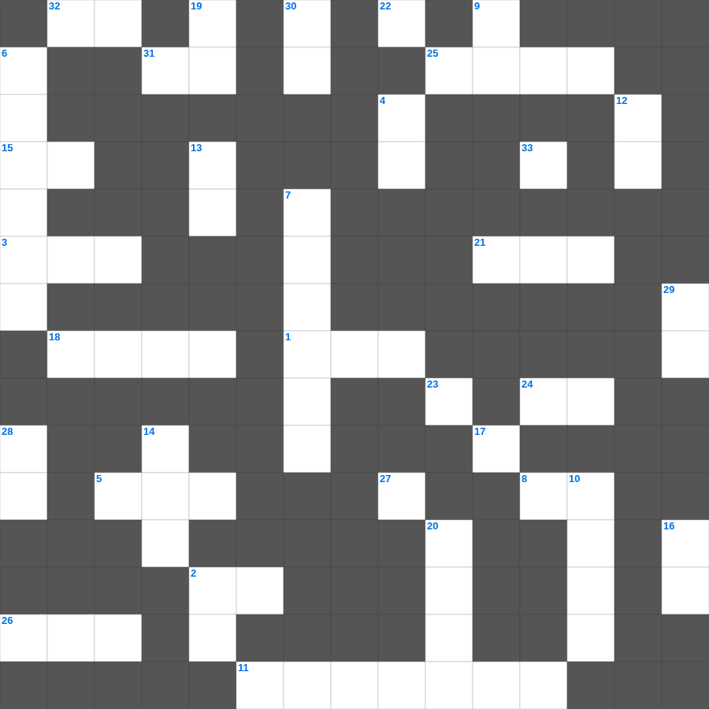

야고보서 마스터 100
📌 서비스 정의
십자가로세로는 교회 주보와 주일학교에서 사용할 수 있는 성경 기반 가로세로 퍼즐 서비스입니다. 성경 인물, 사건, 핵심 구절을 바탕으로 제작되었습니다. 온라인 풀이 및 인쇄 기능을 제공합니다.
📖 야고보서란?
야고보서는 믿음이 실제 삶의 행함으로 나타나야 함을 강조하며, 시험과 인내, 말과 지혜에 대한 매우 실천적인 가르침을 담은 서신입니다.
📚 야고보서의 주요 사건·주제
시험과 인내에 대한 가르침 · 행함이 있는 믿음에 대한 강조 · 말(언어)의 능력에 대한 경고 · 지혜와 겸손에 대한 가르침 · 기도의 능력에 대한 가르침
야고보서를 주제로 한 야고보서 성경퀴즈입니다. 35개의 단어를 맞춰보세요! 가로세로 낱말 퍼즐 형식으로 야고보서의 핵심 내용을 재미있게 복습할 수 있습니다.

📝 가로 힌트
1. 모든 백성이 '아멘'하며 화답한 곳
2. 그의 성소에서 하나님을 찬양하며 그의 권능의 이것에서 그를 찬양할지어다
3. 네 하나님 여호와는 자비하신 이것이심이라
5. 까닭 없는 저주는 참새가 떠도는 것과 제비가 날아가는 것 같이 이것하지 아니하느니라
8. 다윗이 피신했던 블레셋 도시
11. 욥기 1장의 배경이 된 천상 회의의 참석자들
15. 부녀여 내가 이제 네게 구하노니 서로 이것하자
18. 요한삼서 1장 5절: 가이오가 형제와 나그네에게 행한 것
21. 요한삼서 1장 13절: 내가 네게 쓸 것이 많으나 무엇과 무엇으로 쓰기를 원하지 아니하고 (한 단어)
22. 각 나라와 족속과 백성과 방언에서 아무도 능히 셀 수 없는 큰 무리가 입은 옷의 색
24. 주의 인자하심이 이것보다 나으므로 내 입술이 주를 찬양할 것이라
25. 축복을 선포한 산
26. 그 귀를 진리에서 돌이켜 허탄한 이것을 따르리라
31. 요한이서 1장 10절: 이단이 오면 집에 들이지도 말고 무엇도 하지 말라 했나
32. 백성들이 길로 인해 불평하다 물린 독을 가진 짐승
33. 허리는 백합화로 둘러싼 이것 더미 같구나
📝 세로 힌트
2. 현숙한 여인은 자기의 손을 펴서 가난한 자를 도우며 이것한 자를 위하여 손을 내밀며
4. 큰 소리 나는 제금으로 찬양하며 이것 소리 나는 제금으로 찬양할지어다
6. 요한일서 4장 19절: 우리가 사랑함은 그가 어떻게 하셨기 때문인가
7. 정탐꾼들이 가져온 포도 한 송이를 멘 방법
9. 내 사랑하는 자의 목소리로구나 보라 그가 산에서 달리고 작은 산을 이것 넘어오는구나
10. 에라스도는 고린도에 머물러 있고 이 사람은 병들어서 밀레도에 두었노라
12. 하나님을 경외하는 것이 이것의 근본
13. 요한일서 4장 4절: 우리 안에 계신 이가 세상에 있는 자보다 어떠한가
14. 이스라엘이 정복한 땅의 경계 '남쪽은 가데스 바네아, 북쪽은 이것'
15. 그들이 교회 앞에서 너의 이것을 증언하였느니라
16. 강림하여 나타나심으로 폐하시리라 악한 자의 나타남은 이것의 활동을 따라 모든 능력과 표적과 거짓 기적과
17. 주의 궁정에서의 한 날이 다른 곳에서의 이것 날보다 나은즉
19. 새로 장가든 남자는 일 년 동안 이것을 면제함
20. 모세의 수종자, 눈의 아들
23. 요한이서 1장 6절: 계명은 너희가 처음부터 들은 바와 같이 그 가운데서 이것하라 하심이라
27. 아무에게도 이것을 끼치지 아니하려고 밤낮으로 일하면서 너희에게 하나님의 복음을 전하였노라
28. 노인의 얼굴을 공경하며 일어서야 하는 대상
29. 이스라엘 백성이 광야에서 처음 진을 친 곳
30. 유다서 1장 11절: 불의의 삯을 사랑한 구약 인물
🧩 이 퍼즐에서 배우는 내용
이 퍼즐은 야고보서 마스터 100의 핵심 단어와 개념을 자연스럽게 복습할 수 있도록 구성되었습니다. 주일학교 수업이나 개인 성경공부에서 학습 내용을 점검하는 용도로 바로 활용할 수 있습니다.
🧑🏫 교회 교육 자료 활용
이 퍼즐은 주일학교 교재 추천 자료로 활용할 수 있고, 주일학교 주보에 넣기 좋은 분량으로 구성되어 있습니다. 수업용 주일학교 교안에 활동지로 붙이거나, 예배 후 복습용 주일학교 공과교재로 바로 사용할 수 있습니다.
🏷️ 키워드
야고보서 성경퀴즈, 야고보서, 십자가로세로, 성경퀴즈, 말씀퀴즈, 가로세로퍼즐, 주일학교 교재 추천, 주일학교 주보, 주일학교 교안, 주일학교 공과교재